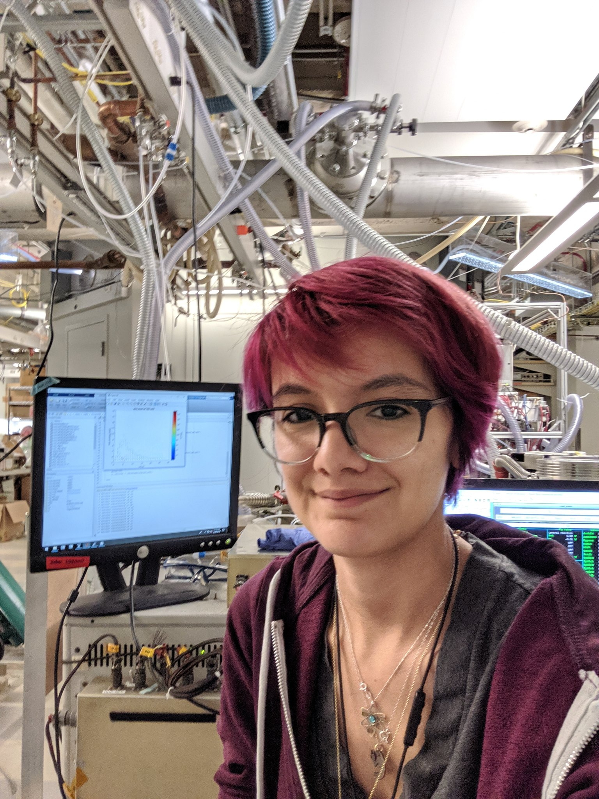

Research
Though it may appear simple at a glance, our atmosphere is actually a complicated soup of compounds. The majority of these compounds fall under a class called oxygenated volatile organic compounds (OVOCs), which play key roles in the formation of air pollutants such as tropospheric ozone and secondary organic aerosols. Despite being such an important group of compounds, analytical challenges have hampered our ability to make ambient measurements of OVOCs. Therefore, my research has mainly revolved around developing different mass spectrometry methods so that we can more accurately measure different OVOCs in our atmosphere.
Using these new mass spectrometry methods, I can then use these data sets to explore the chemistry of specific OVOCs. In particular, I'm investigating whether an isomer-specific sink of these nitrates is responsible for discrepancies between field observations and model estimates of NOx, ozone and nitric acid.
Publications
- Vasquez, K.T., et al. (2020). Rapid hydrolysis of tertiary isoprene nitrate efficiently removes NOx from the atmosphere. PNAS, doi:10.1073/pnas.2017442117
- Vasquez, K. T., et al. (2018). Low-pressure gas chromatography with chemical ionization mass spectrometry for quantification of multifunctional organic compounds in the atmosphere. Atmos. Meas. Tech., 11, 6815-6832. doi:10.5194/amt-11-6815-2018